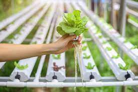

Hydroponics is a revolutionary gardening technique that allows you to grow plants without soil. Instead, plants are grown in a nutrient-rich water solution, making it an efficient and sustainable way to cultivate a wide variety of crops right on your terrace.
Save Water: Hydroponics uses up to 90% less water compared to traditional soil-based gardening.
Year-Round Gardening: With controlled environments, you can grow plants all year round, regardless of the weather.
No Weeding: Say goodbye to back-breaking weeding tasks; hydroponics eliminates the need for it.
Higher Yield: Plants grow faster and produce higher yields due to optimized nutrient intake.
Space-Efficient: Ideal for urban areas with limited garden space as it can be set up vertically.
The materials required for starting a basic hydroponic system at home will depend on the specific system you choose and the number of plants you intend to grow. Here's a general list of materials you might need:
Container or Growing Trays: To hold the plants and the nutrient solution. This could be a plastic container, a grow tray, or even a customized hydroponic setup.
Growing Medium: Provides support for the plants and holds the roots in place. Common options include hydroponic clay pebbles, rockwool cubes, coco coir,
Hydroponic Nutrient Solution: Provides essential nutrients for plant growth. You can purchase pre-mixed nutrient solutions suitable for hydroponics or mix your own with individual nutrient salts.
Water Pump: For recirculating the nutrient solution in systems like Deep Water Culture , Nutrient Film Technique , and Ebb and Flow.
pH Testing Kit: To monitor the pH level of the nutrient solution.
pH Adjusters: To raise or lower the pH level of the nutrient solution if needed.
Timer (optional): For controlling the lighting and water pump cycles in automated systems.
Seeds or Seedlings: Choose plants suitable for hydroponic cultivation and the available space in your setup.
Support Structures (optional): Some plants may require trellises or other support structures as they grow.
Measuring Devices: For accurately measuring nutrient concentrations, pH levels, and other factors affecting plant health.
Hydroponic System Guide or Manual: Follow the instructions provided with your chosen hydroponic system for proper setup and maintenance.